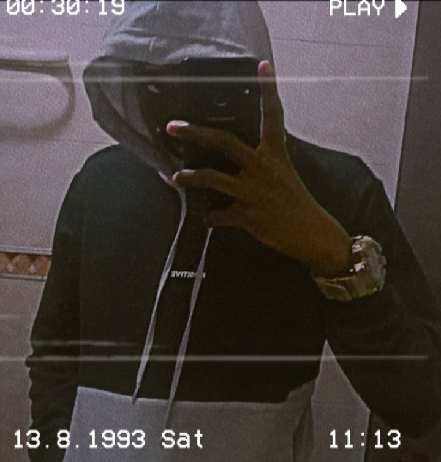

Responsable de proporcionar dirección para el negocio, liderar el equipo para cubrir eventos, gestión diaria de la empresa, manejo de clientes de alto perfil, fijar precios y firmar acuerdos comerciales, contratación, pago de salarios, firmar cheques y documentos en nombre de la compañía.
Responsable de la administración diaria de la oficina, manejo de la correspondencia, gestiona clientes, proveedores, maneja todas las llamadas entrantes y correos electrónicos, cobros de pagos y la presentación de efectivo y cheques en los bancos, cualquier otra tarea asignada por el Director de Operaciones
Responsable de la comercialización de los productos y servicios de la empresa, promoción de la empresa, crear estrategias de marketing y ventas, etc. Fuente de exposiciones y oportunidades para que la empresa aproveche para promover el negocio, representar a la organización en algunas reuniones de negocios estratégicas, la contratación y formación de representantes de ventas independientes, cualquier otra tarea asignada por el Director de Operaciones.
Ayuda al fotógrafo principal en todo momento, mandados para la organización (es decir, entrega de trabajo a los clientes, compra de suministros y papelería, etc.), transporte de cámaras y otros equipos de ida y vuelta a los lugares del evento, Garantiza que la oficina y el entorno se mantengan limpios en todo momento, cualquier otra tarea asignada por el Director de Operaciones